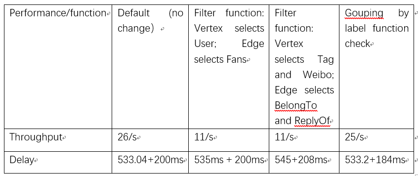
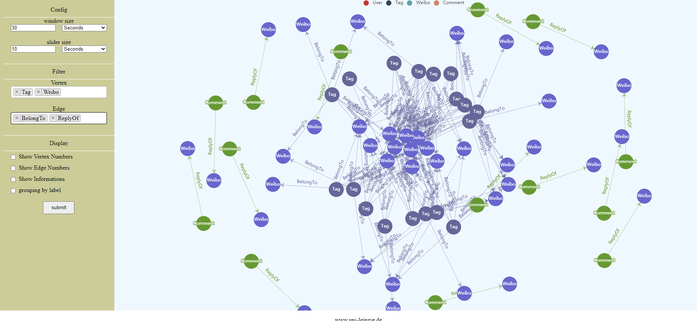
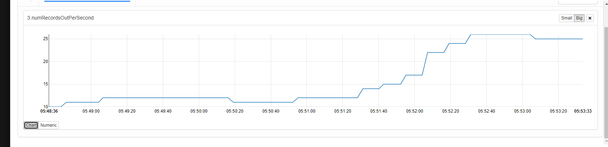
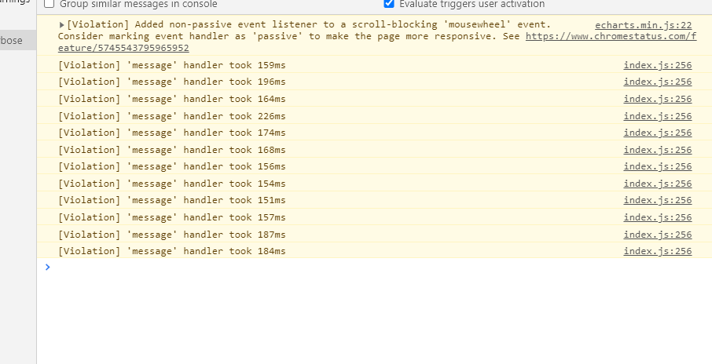
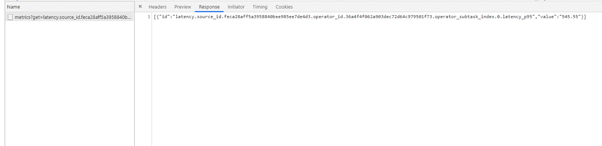

Data Stream Processing System
The performance evaluation of a data stream processing system is mainly throughput: how many elements the system can process in a unit time, and delay: how long it takes for an element to be output from the first contact with the system, and scalability. Use code for evaluation. The system is a maven project written with idea software. The back-end language Java mainly uses the Flink architecture, the front-end language JavaScript, and uses WebSocket to push information.
Delay is An element is from time point t1 (ingesting the element in the flink source) to time point t2 (the element is sent from the sink to the front end) to time point t3 (the element is displayed on the front-end interface), the duration of this process from t1 to t2, t2 to t3 .
The data source uses weibo-data-generator to enable the WeiboDataGeneratorApplication class, and weibo-data-analysis to enable the WeiboAnalysis class.
Screenshot of system operation
   